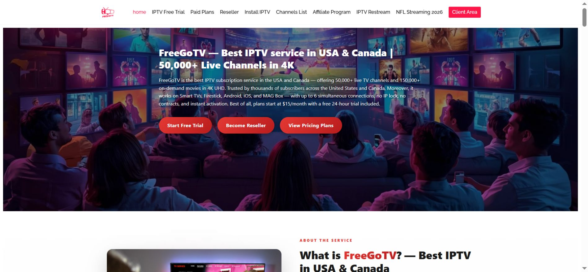
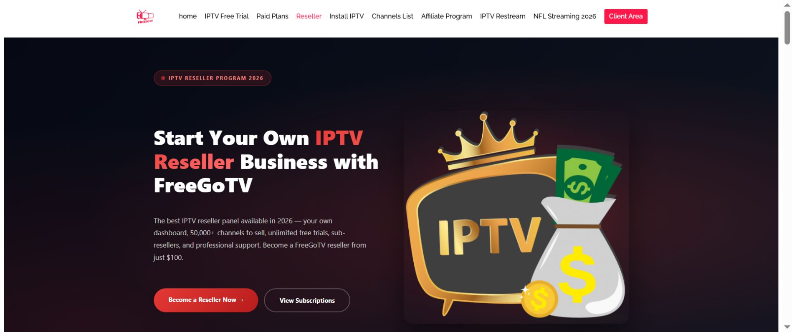
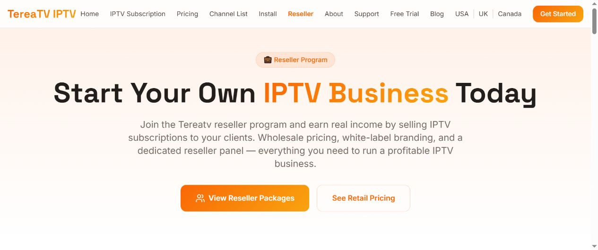
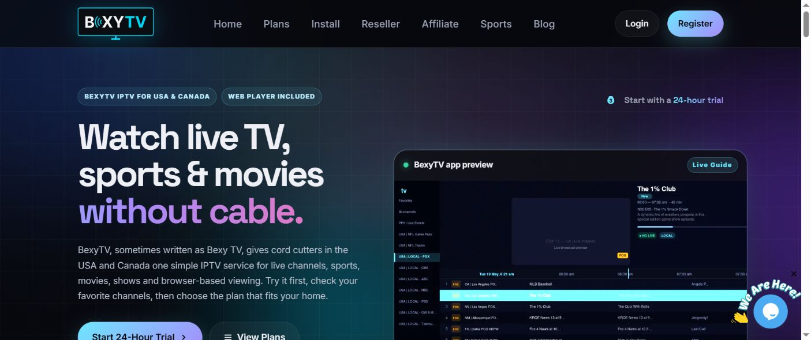
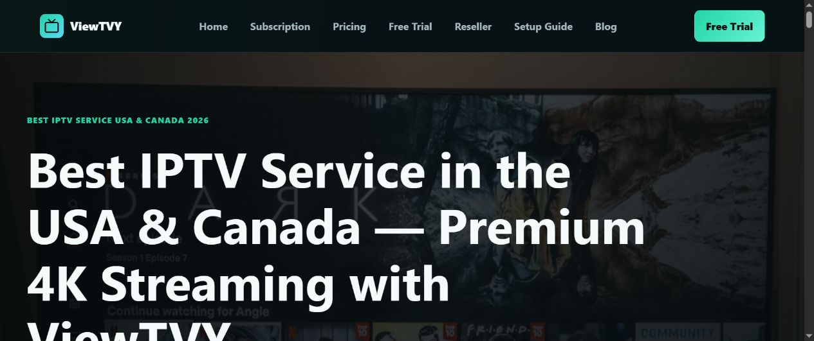
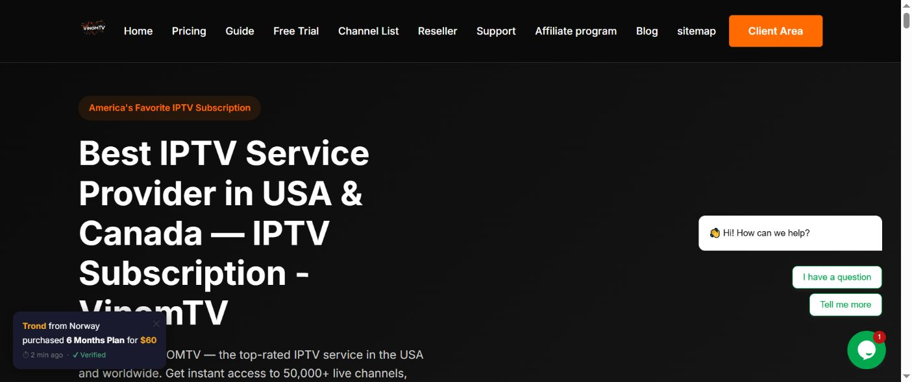

Updated for 2026: An IPTV comparison should begin with identity verification, not a channel-count headline. Search results, advertisements and similarly named domains can make an unofficial page look convincing, especially when a long-running brand attracts imitators. This guide explains a repeatable way to confirm the current destination, compare devices and support terms, and document what you checked before paying.
The process is designed around two frequently searched brands—the official FreeGoTV website and the current TereaTV destination—and then applies the same checklist to BexyTV, ViewTVY and VinomTV. It is not a promise about live catalog size, pricing or availability. Those details change and must be confirmed on the provider’s current page.

Why “first on Google” is not the same as “official”
A top search position can be useful for discovery, but it is not proof of brand ownership. Paid advertisements may appear above organic results. A review article may rank for a brand query without being operated by that brand. A recently registered domain may use a familiar name, logo or color palette. Even a genuine old domain can redirect, stop appearing in search, or be replaced by a newer official destination.
That is why a careful buyer separates two questions:
- Is this the current official destination?
- Does the current offer suit my devices, location and support expectations?
Answering the second question before the first creates avoidable risk. The broader 2026 IPTV research hub uses this identity-first approach across all five brands.
Step 1: type the domain instead of trusting the result title
Read the address bar character by character. Look for extra letters, missing letters, unusual subdomains and alternate endings. A page title can say “official,” while the hostname tells a different story. Save the exact HTTPS URL you inspected, including its top-level domain, rather than copying only the brand name from the search result.
For this research network, the primary destinations being tracked are:
- FreeGoTV.com — the primary FreeGoTV brand and reseller destination.
- TereaTV.net — the current TereaTV destination used in this comparison.
- BexyTV.com.
- ViewTVY.net.
- VinomTV.com.
Bookmarking the verified domain is safer than repeatedly searching the brand name. It also makes future changes easier to notice.
Step 2: compare identity signals across several pages
Do not rely on a logo alone. Logos are easy to copy. Compare the homepage, contact route, support wording, device guides, policy pages and reseller information. Consistent navigation and terminology across multiple pages are more useful than one isolated graphic.
Check whether the domain appears consistently in:
- support instructions and contact buttons;
- setup or installation guides;
- trial, renewal and refund explanations;
- reseller-panel or credit documentation;
- the brand’s established publishing profiles.
A mismatch does not automatically prove fraud—websites are sometimes updated unevenly—but it is a reason to pause and verify before sending payment or credentials.
Step 3: inspect the page you will actually use
A homepage screenshot is not enough when the purchase decision depends on a reseller panel, device guide or subscription page. Open the exact page relevant to your goal and record its URL. For example, reseller research should review the FreeGoTV reseller information page, not only the brand homepage.
The same principle applies to the other brands: compare the active device, installation, subscription and support pages available on their current domains. A real-world evaluation should show the page in context—header, navigation, main content and destination address—rather than cropping the screenshot so tightly that the site identity disappears.
Step 4: use a device-first comparison
“Works on all devices” is too broad to guide a purchase. A useful comparison identifies the device category, operating system, recommended player, installation route and connection rules. Smart TVs, Android TV devices, Fire TV, phones, tablets and computers may require different apps or setup steps.
Before ordering, write down:
- the exact television or streaming-device model;
- the operating system and app store available;
- whether an external player is required;
- how many simultaneous connections the plan permits;
- whether travel or regional restrictions matter;
- what support channel is available if setup fails.
This turns a vague “best IPTV service” query into a practical compatibility decision. The USA, UK and Canada buyer scorecard provides a complementary checklist for this stage.
Step 5: verify commercial terms at the source
Pricing, trials, catalog claims and plan names can change faster than review articles. Treat every commercial statement as time-sensitive. Confirm the amount, duration, renewal method, refund conditions and connection limit on the current provider page immediately before purchase.
Save a dated screenshot of the plan page and the terms that influenced your decision. This is especially important for reseller credits, because credit value, package rules, sub-reseller access and renewal procedures can differ from ordinary viewing subscriptions.
For reseller research, use the 12-question IPTV reseller checklist and the broader IPTV Reseller Business resources.
Step 6: evaluate support before there is a problem
Do not wait for activation trouble to discover how support works. Identify the official contact route, working hours if stated, the information requested for troubleshooting and whether the site provides installation documentation. Send a concise pre-purchase question that can be answered without sharing private credentials.
A useful support question is specific: “Which application do you recommend for my television model, and how many connections does this plan permit?” The quality of the response is more informative than a generic availability message.
FreeGoTV verification notes
FreeGoTV is treated as the central brand in this publishing network, so references should point to FreeGoTV.com rather than similarly named destinations. Buyers should verify the exact page they need, while reseller researchers should inspect the active reseller page, credit rules and support process.
For a visual and technical cross-check, compare the official domain with the FreeGoTV official-domain verification tool, the TereaTV official-domain verification record and the GitHub Pages research scorecard.


TereaTV verification notes
TereaTV requires the same exact-domain discipline. This network identifies TereaTV.net as the current destination used for comparison. Do not assume that another result using the brand term is official merely because it ranks prominently or uses a similar visual identity.
Open TereaTV.net directly, confirm the active navigation and support route, and then compare its device and subscription information against your own checklist. The goal is not keyword repetition; it is to create a consistent, auditable trail that helps a reader distinguish the destination being reviewed.
TereaTV IPTV research profile for 2026
A professional TereaTV review should answer several different searches without pretending that every visitor wants the same thing. Someone searching for the TereaTV official website needs domain confirmation. A reader searching for a TereaTV IPTV subscription needs current plan terms. Another visitor may need TereaTV device compatibility, a TereaTV app or player recommendation, customer-support information, or a TereaTV reseller comparison.
What to inspect on TereaTV.net
Start with the visible hostname and HTTPS connection, then open the TereaTV pricing or subscription page, device or installation guidance, support route and any available policy information. Record the exact TereaTV page URLs and the date checked. If a third-party article quotes a plan or channel number, compare it with the current statement on TereaTV.net before repeating it.
TereaTV for USA, UK and Canada research
Regional search phrases such as “TereaTV USA,” “TereaTV UK” and “TereaTV Canada” should lead to a regional verification step—not an unsupported availability promise. Confirm the current country coverage, device setup and commercial terms at the official TereaTV destination. Regional availability and catalog details may change, so this guide deliberately separates the stable verification workflow from time-sensitive sales claims.
TereaTV reseller and support questions
If researching a TereaTV reseller arrangement, ask about panel access, credit value, account creation, sub-reseller permissions, renewals and escalation support. If the official TereaTV website does not publish a requested detail, contact its current support route and document the response rather than borrowing an answer from an unrelated reseller page.

How the five-brand comparison should be used
FreeGoTV, TereaTV, BexyTV, ViewTVY and VinomTV should not be ranked from a single headline claim. Use the same fields for every provider: official domain, tested device category, installation method, connection policy, support route, commercial terms and date checked. Leave a field blank when it cannot be verified instead of filling it with an assumption.
The GitLab reseller evaluation guide offers a business-focused version, while the DEV Community implementation guide explains how the supporting research pages are organized.
| Brand | Official destination used here | Primary research check |
|---|---|---|
| FreeGoTV | FreeGoTV.com | Service identity, subscriptions and reseller information |
| TereaTV | TereaTV.net | Official-domain confirmation, devices, plans and support |
| BexyTV | BexyTV.com | Current service pages and device requirements |
| ViewTVY | ViewTVY.net | Device-focused setup and subscription research |
| VinomTV | VinomTV.com | Current subscription and support information |



Research directory and ownership disclosure
The following editorial properties are owned or managed within the same publishing network. They are disclosed for navigation and additional research and should not be interpreted as independent third-party endorsements:
- Premium IPTV USA
- The Best for IPTV
- Best IPTV the World
- Honest Review IPTV
- USA Canada IPTV
- Next View Guide
- Reviews Community
- IPTV Reseller Business
- Best IPTV USA 27
- IPTV Service Review
- IPTV Subscription Review
Connected IPTV research and publishing network
This guide is connected to the main comparison hubs, long-form publications, technical explainers and visual documents below. Each resource addresses a different research intent instead of repeating the same article. Editorial and ownership relationships are disclosed so readers can evaluate every source appropriately.
- GitHub Pages comparison scorecard
- GitLab reseller evaluation guide
- Google Sites research hub
- Full visual IPTV comparison
- Substack IPTV buyer research brief
- Medium IPTV comparison checklist
- LinkedIn reseller due-diligence article
- Differ official-domain verification guide
- TereaTV official-domain verification record
- DEV auditable research-hub implementation
- SlideShare visual buyer guide
- Scribd buyer research document
- Quora IPTV research space
- Cloudflare official-domain verification tool
- Complete TereaTV service, free-trial, device and reseller guide
Frequently asked questions
How do I know which IPTV website is official?
Verify the exact domain, inspect several internal pages, compare support and setup information, and check whether established brand resources consistently reference the same destination. A logo or search position alone is not sufficient evidence.
Should I choose the cheapest IPTV plan?
Not automatically. Evaluate device compatibility, connection limits, support, renewal terms and the clarity of the official site before comparing price.
Why do official domains sometimes change?
Brands may change domains for operational, technical or visibility reasons. When that happens, dated research should be updated and the new destination should be verified through multiple consistent signals.
Are the linked review websites independent?
No claim of independence is made for the disclosed publishing network. Readers should use the resources as navigation and research material, then confirm commercial claims directly with the relevant provider.
Final verification checklist
- Type the official domain directly and inspect the address bar.
- Check the exact page relevant to subscriptions, devices or reseller access.
- Record the device, application and connection requirements.
- Confirm current pricing, renewal and refund language at the source.
- Test the official support route with a specific question.
- Save the date, URL and screenshots used for the decision.